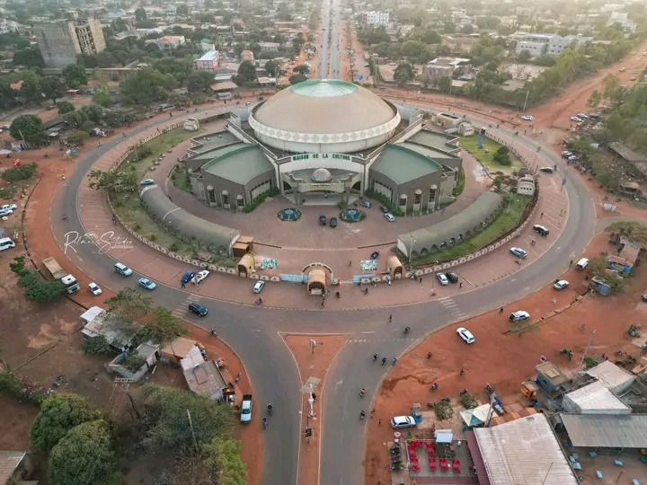

La Maison de la Culture de Bobo-Dioulasso est un haut lieu de diffusion artistique et culturelle au Burkina Faso. Inaugurée dans les années 1990, elle accueille de nombreux événements : concerts, festivals, expositions, théâtre et conférences. Elle est connue pour son architecture moderne et ses jardins ouverts au public.
La Maison de la Culture est également un carrefour de formation et de création, renforçant le rayonnement culturel de la ville. Elle symbolise le dynamisme artistique de Bobo-Dioulasso et constitue un pilier essentiel pour la préservation et la promotion du patrimoine culturel burkinabé.